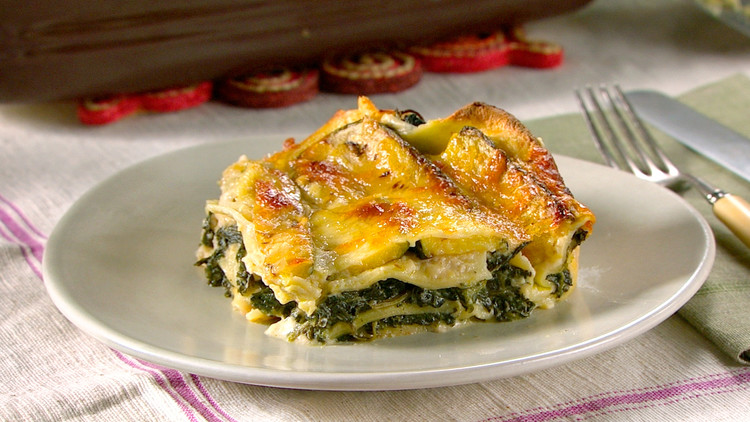

Spinach and Feta Follow Along Recipe
Home
Easy follow along recipe for meatless style lasagna for those looking to subsitute meat or just to try something new!
image and guideline for recipe from here

What You'll Need
- 2 hours of preparation time
- 1/4 cup of olive oil
- About a teaspoon of salt
- A pound of fresh spinach
- Unsalted Butter
- 1/4 cup of flour
- 2 cups of milk
- Shredded mozzarella
- Crumbled Feta Cheese
- Shredded Parmesan
- A fresh zuchinni
- Lasagna noodles
Cooking Directions
- Preheat oven to 375 degrees
- Heat 1 tablespoon of cooking oil in a small pan over medium heat. When oil simmers, add 1/2 teaspoon salt and cook, stirring occasionally, until translucent, 3 minutes. Add spinach, a few handfuls at a time, and cook, stirring frequently, until all spinach is wilted, 3-5 minutes. Transfer to a mesh strainer and press against spinach to remove as much liquid as possible.
- In a medium saucepan, melt butter over high heat. Add flour and cook, whisking constantly, until roux is golden brown, 1 minute. Add milk and continue whisking until milk begins to boil and thickens enough to coat the back of a spoon. Remove from heat and stir in Parmesan, 1 teaspoon salt, and black pepper. Cover surface with plastic wrap.
- Heat remaining 3 tablespoons oil in a large skillet over medium-high heat and fry zucchini, turning once, until golden brown on both sides, 2 minutes per side. Transfer to paper towel-lined plate to drain and sprinkle with remaining 1/2 teaspoon salt.
- Spread 1 cup bechamel along the bottom of a 9-by-13-inch baking dish. Place one-third of noodles over bechamel in a single, overlapping layer. Top with 1 cup bechamel and half of spinach. Repeat with a second layer of noodles, bechamel, and spinach. Top with remaining noodles, remaining bechamel, zucchini and mozzarella. Cover with foil and bake 45 minutes. Remove foil and continue baking until cheese is golden in places and lasagna is bubbling along the edges, about 15 minutes.
- Remove lasagna from oven and let stand 20 minutes before slicing and serving.